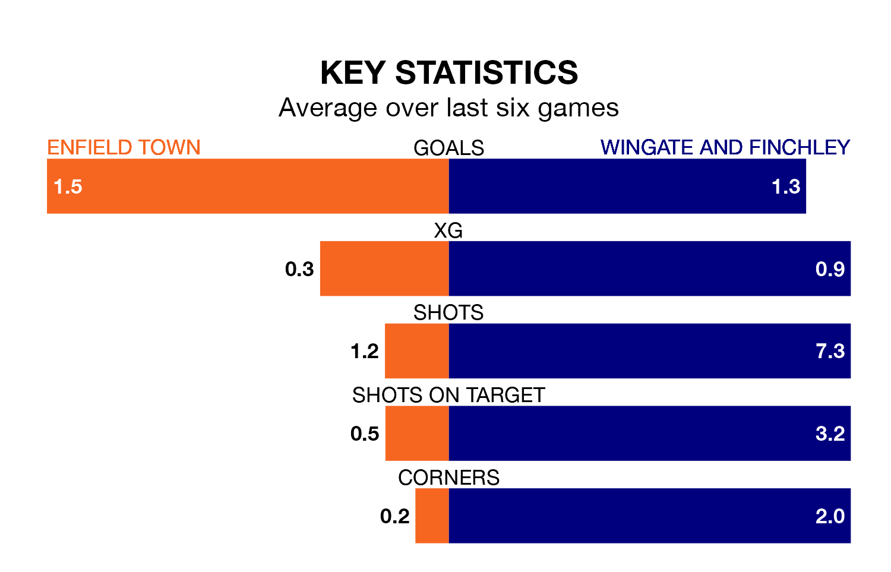

Enfield Town host Wingate and Finchley on Saturday at the Queen Elizabeth Stadium in the Isthmian Premier Division.
In their last league match, on Tuesday, Enfield drew with Kingstonian 0-0 at home.
Wingate & Finchley also drew, 0-0 at home against Hashtag United on February 17.
With 56 goals in 30 games so far this season, Wingate & Finchley are scoring more than average in the league with 1.9 goals per game. But they are conceding more than average too, letting in 50 goals at a rate of 1.7 per game.
Enfield are also above average scorers, with 1.8 goals per game, compared to a league average of 1.6. They have conceded 1.5 goals per game.
In the last 10 years, Enfield and Wingate & Finchley have played each other on 17 occasions. Enfield won seven of them, Wingate & Finchley five, and they drew five times.
On average, Enfield scored 1.8 goals and the Blues 1.3 in those matches.
Their last meeting was on October 31, when Enfield won 4-1 away.
The Blues are fourth in the table after 30 games, of which they have won 16 and drawn four, earning 52 points.
Town are one place behind the away team in fifth, with 14 wins and eight draws putting them on 50 points.
The hosts are in disappointing form in the Isthmian Premier Division, with one win and three draws from their last six games.
With two wins and two draws over that period, Wingate & Finchley's form is slightly better – they have taken eight points from 18, compared to Enfield's six.
Updated: 10:08 (UTC), 23/02/24